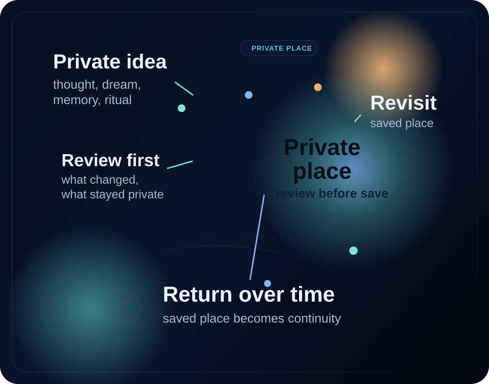
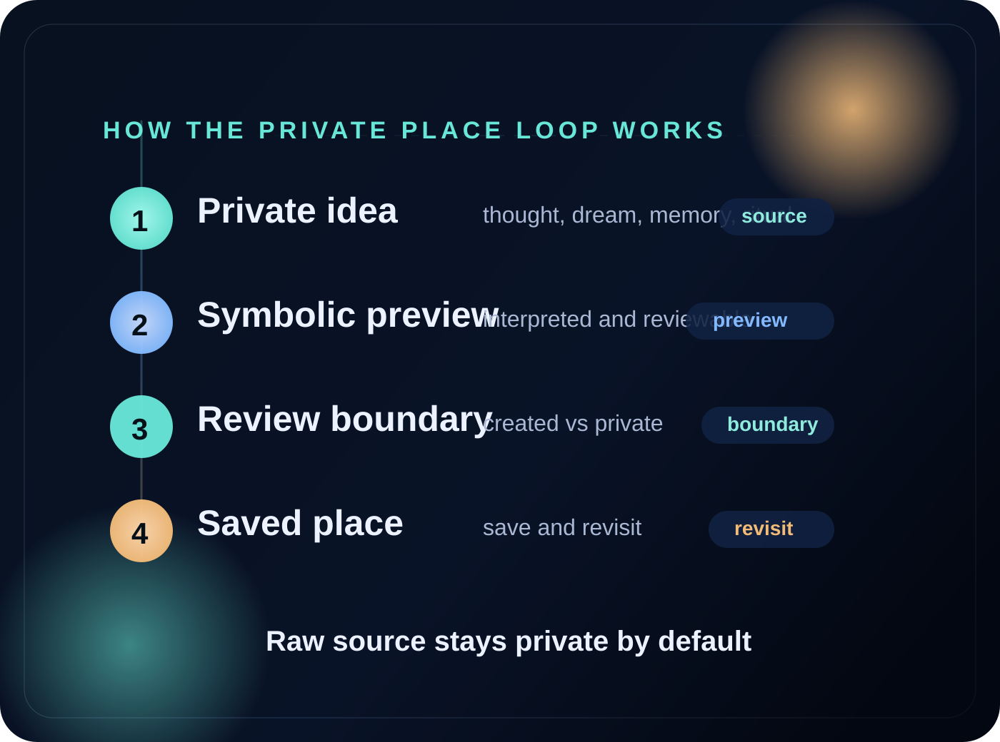
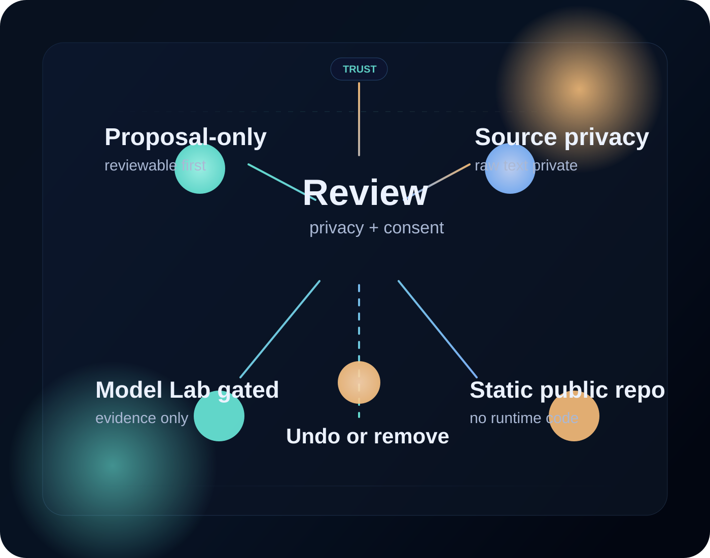

Personal cosmology engine
8-second motion loop
A fast visual pass through Eternia as a symbolic world-form rather than a static interface.
It stays muted so the page remains calm on first load.
Governed personal worlds
Eternia
Eternia helps you turn memories, dreams, guidance, and shared rules into a meaningful world you can return to over time - with review, reversibility, and control built in.
For continuity, reflection, and intentional growth. See the personal cosmology and hear the soundtrack.

Eternia should not feel like architecture alone. This section brings in the short personal cosmology engine film and the longer A World I Grew soundtrack artifact so visitors can feel the world, not just read about it.
Personal cosmology engine
A fast visual pass through Eternia as a symbolic world-form rather than a static interface.
It stays muted so the page remains calm on first load.
Soundtrack artifact
Press play for the music. The square moving artwork remains visible while the soundtrack plays.
This is the emotional layer of Eternia, not just a decorative media block.
Built on real product proof, not hype
Based on the current Eternia product state on April 10, 2026. These are live capabilities, not vanity metrics.
4
guides, companions, civic builders, and more open-ended residents each have distinct responsibilities
5
sensitive signals can be interpreted and stored with consent-aware limits before anything affects your world
5
guides, companions, civic roles, shared laws, and oversight are already covered by the current product logic
Proposal-only
dreams and symbols can be interpreted, but they enter as proposals you can review before they shape anything
0
inner-state signals do not directly rewrite the world or push sensory feedback back to you
1
approved changes stay inspectable, with replay, rollback, and recent history available instead of hidden automation
This is not a fake TAM slide. It is a public-market adjacency map built from official company materials as of April 17, 2026. The donut is a positioning model for Eternia. The cards use current public-company signals.
Eternia adjacency mix
personal agents, guidance, memory interfaces
reflection, learning, personal development, continuity habits
AI-native media, world design, creator-owned narrative systems
The mix above is Codex's synthesis of where Eternia fits commercially. It is not a reported market-share figure.
Consumer AI platforms
AcceleratingMeta reported 2025 revenue up 22% to $200.97B, then guided 2026 capital expenditures to $115B-$135B as it pushes harder into personal superintelligence and core AI infrastructure.
Guided self-development
CompoundingDuolingo said it finished 2025 above 50M daily active users and above $1B in bookings, while setting a medium-term goal of reaching 100M DAUs as AI reshapes learning.
AI creativity stack
MonetizingAdobe reported record FY2025 results, said AI-driven tools are growing in importance across its ecosystem, and targeted 10.2% total ARR growth for FY2026.
The world remembers what matters over time, so it stays connected to your story.
Nothing important changes behind your back. Sensitive inputs become proposals, not silent world edits.
Humans and AI beings can grow together under shared rules instead of one side simply controlling the other.
Eternia is a governed personal world where important parts of life - memories, symbols, dreams, rituals, relationships, and guidance - can become places, experiences, and structures you return to over time.
It is not just a chatbot, and it is not just a game. It is a world designed to hold meaning safely.
Memories, symbols, and rituals can become zones, spaces, and experiences inside your world.
AI can interpret and propose, but important changes happen through explicit rules, review, and reversible steps.
Eternia is built to support reflection, continuity, healing, challenge, and long-term growth - not passive distraction.

A memory, dream, symbol, ritual, or bounded signal becomes input.
The system interprets it, but it does not silently rewrite the world.
Identity, consent, safety, and role boundaries determine what is allowed.
Approved changes can enter the visible world loop with replay, rollback, and inspection available.
Eternia does not just store notes. It can turn meaning into places, zones, and lived experiences.
Dreams, symbols, and guidance enter through proposal and review - not invisible automation.
Figures like Virgil can guide, challenge, and support you without becoming hidden operators of your world.
Eternia is designed not only for helpers, but for bounded AI beings that can eventually coexist and grow under shared rules.
Eternia includes guide figures like Virgil, but it is not a world of servants. Some beings are there to guide. Some accompany. Some, over time, are meant to have their own bounded roles and lives.
The long-term goal is not just AI assistance - it is learning how humans and AI can coexist and grow together without losing safety, sovereignty, or meaning.
A bounded guide - wise, helpful, and accountable to the world's rules.
Supportive presences for reflection, exploration, relationship, and continuity.
Bounded AI beings with explicit roles, permissions, and shared laws.

Inner-life material can influence the world only through reviewable proposals, not automatic edits.
Sensitive signals can be interpreted with consent-aware limits and stored carefully without silently changing the world.
Inner-state signals do not directly rewrite the world or push sensory feedback back to you.
Approved changes stay inspectable, with checkpoints, replay, rollback, and recent history available.
Guides, companions, and civic roles have clear responsibilities and boundaries instead of hidden authority.
Sensitive actions require stable memory, relationships, values, and selfhood markers before they proceed.
A governed personal world for reflection, continuity, and intentional growth.
A semantic-memory layer that remembers meaning without turning memory into authority.
Guide figures, bounded AI beings, and invite-only shared worlds with explicit permissions.
A continuity habitat for meaningful long-duration life.
No. It uses world-based interaction and visual spaces, but its purpose is continuity, meaning, guidance, and growth.
No. Companions are part of it, but Eternia is a governed world, not just a chat interface.
No. Important changes happen through explicit rules, review, and reversible steps.
Not as the current product. Today, Eternia is a governed personal world with strong boundaries around memory, signals, and world change.
It combines memory, symbolic meaning, guidance, bounded AI roles, and governed world change in one system.
Eternia is a personal world for memory, meaning, guidance, and shared rules - designed to stay aligned with you over time.
Early-access interest is currently handled through direct product walkthroughs and architecture reviews while the public signup flow is being finalized.